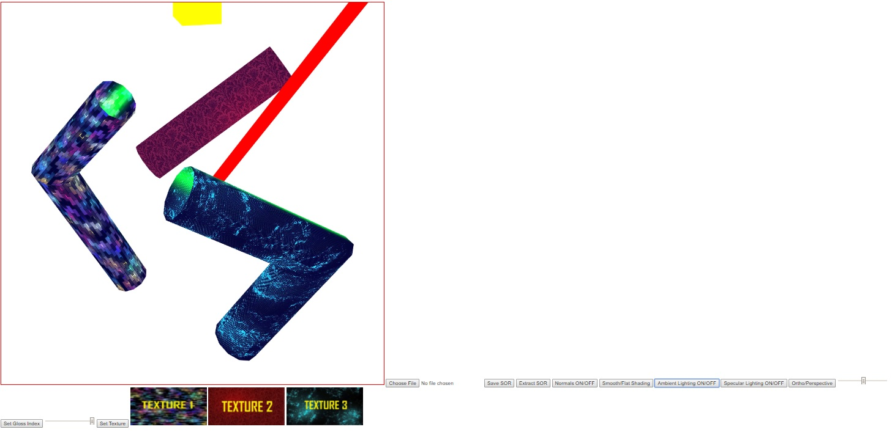

Name: Stephen Woodbury
Student ID: 1429496 : swoodbur
Submission For: Prog4
Date: 12/2/2017
Files Included: WoodburyStephenProg4Features.html, WoodburyStephenProg4Driver.html, WoodburyStephenProg4Driver.js, WoodburyStephenProg4Output.jpg, IOSOR.js
Assignment Details: Take Lab4, allow for texture mapping
Additional Features: Able to choose from three different textures with a slider bar (Must have an object selected)
Notes: Everything performs as specified and as more. I would do a contest project, but I've a lot of finals study to do. My apologies! I had this idea to Create a landscape where you could move your mouse around a field and place crates. The crates would scale based on distance above the bottom, I'd pick Some realistic textures, and I'd probably allow for some way to break crates, where they would change either the background everytime one breaks, or a random item appears from the crate breaking. Finals study though
WoodburyStephenProg4Output:
Link to Driver : WoodburyStephenProg4Driver.html